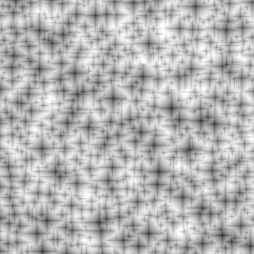
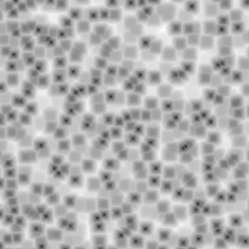
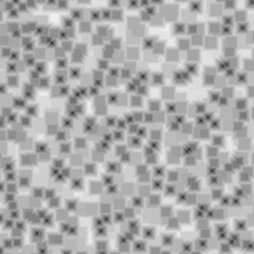

Voronoi Texture Node¶
Voronoi Texture Node.
The Voronoi Texture node adds a procedural texture producing a Voronoi patterns. Voronoi patterns are generated by randomly distributing points, called seeds, that are extended outward into regions, called cells, with bounds determined by distances to other points. For more information see Voronoi diagram on Wikipedia.
The Voronoi Texture can be used to generate very convincing metal, especially the “hammered” effect, and organic shaders such as scales or veins in skin.
Inputs¶
- Vector
- Texture coordinate to sample texture at; defaults to Generated texture coordinates if the socket is left unconnected.
- Scale
- Overall texture scale; the larger the scale, the more points are generated and thus produces more cells.
Properties¶
- Coloring
How the Voronoi cells are colored.
- Intensity
- Each cell is shaded with a black to white gradient from the cell’s seed to the outer edge of the cell.
- Cells
- Each cell is randomly assigned a solid color, with the enforcement that neighboring cells do not have the same color.
- Distance Metric
The algorithm to find the distance between cells of the texture.
- Distance
- Calculates the distance between points using the Euclidean distance formula which happens to be the Pythagorean formula. For more information see Euclidean distance on Wikipedia.
- Manhattan
- Calculates the distance between points based on a grid, disallowing vertical lines. This is accomplished by calculating the sum of the absolute differences of the coordinates of the two points. For more information see Taxicab geometry on Wikipedia.
- Chebychev
- Calculates the distance between two points by determining the greatest of their differences along any coordinate dimension. For more information see Chebyshev distance on Wikipedia.
- Minkowski
A generalized algorithm that can represent all other distance metrics by configuring the Exponent input. This exponent represents p in the Minkowski distance function:
\((\sum_{i=1}^{n}{|X_{i} - Y_{i}|^{p}})^{1/p}\)
The higher the exponent the more square the cells become. An Exponent less than 1.0 produces stars shapes while values of 1.0 are the same as using the Manhattan distance metric. Values of 2.0 give the same results as the Distance distance metric. Finally, an exponent of 10.0 is the same as the Chebychev distance metric. So all distance metrics are basically the same – a variation of Minkowski.
Minkowski Exponent: 0.5 (Minkowski 1/2).

Minkowski Exponent: 1.0 (Manhattan).

Minkowski Exponent: 2.0 (Distance).
Minkowski Exponent: 4.0.
Minkowski Exponent: 10.0 (Chebychev).
- Feature Output
Determines which points are used to calculate the distance. Closest, 2nd, 3rd, and 4th use the closest, 2nd, 3rd, and 4th closest points respectively.
Crackle uses the difference between the closest and 2nd closest points to generate a line around the Voronoi cells. This option works best when using Intensity Coloring.
{kind=link}
{kind=link}
{kind=link}
Outputs¶
- Color
- Texture color output.
- Factor
- A grayscale representation of the Color output.
Examples¶

Voronoi texture, Cell Coloring. |
{kind=link}